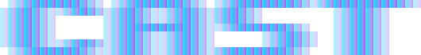

One agent, many roles
cast brings a full cast to your terminal: senior dev, QA, DBA, security reviewer, PM, tech writer. Swap the role, not the tool. Runs on any OpenAI-compatible model, including the one on your own hardware.
curl -fsSL https://aa-blinov.github.io/cast/install | bash
irm https://aa-blinov.github.io/cast/install.ps1 | iex
One session, one repo, four roles
Same codebase, different lens. Swap personas mid-session — the tools don't change, the judgment does.
Why personas, not just prompts
Point a generic coding agent and a role-specific one at the same file, and they don't just answer differently — they look for different things. An appsec persona reading a schema flags the injection surface; a DBA persona reading the same schema flags missing indexes. Same repo, same tools, different definition of "done."
- Assigning an LLM an expert role measurably changes the shape of its output — deeper domain framing at the cost of some plain-language clarity, a real trade-off rather than a free upgrade. Xiao et al., 2026 ↗
- The effect isn't free-floating flavor text: matching the persona to the task helps, mismatching it hurts, and a mismatched persona measurably breaks more answers than a matched one fixes. Kim et al., 2024 ↗
- For tool-using agents specifically, explicit role/behavior rules — not just a persona label — are what fixes "under-acting" (skipping a tool the role should obviously use) and "over-speaking" (chatting instead of calling). Ruangtanusak et al., 2025 ↗
- The effect isn't universal — persona framing helps most on open-ended, advisory, judgment-heavy tasks, and least on narrow factual lookups. A persona only pays for itself when it actually matches the task.
cast leans into that instead of working around it: swap /persona and the same tools, the same repo, and the same model produce a different investigation — different priorities, different tool sequencing, different conclusions, different follow-up questions. A security review that reasons like a senior dev misses different things than one that reasons like an appsec engineer, even reading identical code.
A cast, not a coder
18 built-in personas: senior dev, QA, DBA, security reviewer, PM, tech writer, sysadmin, devops, marketer, and more. Same tools, different judgment. Add your own with a single markdown file.
Runs where your code runs
vLLM, Ollama, your own inference server, or any OpenAI-compatible API. No account, no telemetry, no cloud dependency. Your tokens stay on your hardware.
Real Tools, Real Work
Reads files, writes code, runs shell commands, searches codebases — all in parallel. Delegates sub-tasks to isolated sub-agents. Rules, skills, and MCP servers extend capabilities.
Reasoning Control
Adjust reasoning effort per model: off, low, medium, high, max. Think blocks parsed automatically.
Plan Mode
Explore the codebase and write execution plans before implementing. Think before you build.
Ink TUI
A proper terminal interface with multiline paste, image attachments, smooth animations, and 16 color themes.
Why not opencode?
Both are terminal agents with tools. Different philosophy.
| opencode | cast | |
|---|---|---|
| Approach | Universal agent | Role-based harness |
| Personas | Single agent, single lens | 18 built-in + custom |
| Self-hosted focus | Works with any provider | Designed for local inference |
| Telemetry | Varies | None. Ever. |
Documentation
Getting Started
Install, first run, provider setup
CLI Reference
All flags and subcommands
Interactive Commands
All slash commands in the TUI
Tools
Built-in tools the agent uses
Personas
Built-in personas, custom frontmatter, and tool/skill allowlists
Persona Research
Research on role prompting and agent behavior
Sub-agents & Delegation
Sub-agent delegation, parallel execution, task tool, and roles
Skills
Agent Skills spec, loading, creating
Plugins
Rules
Cursor-compatible rule system
MCP Servers
MCP configuration
Context Files
AGENTS.md / CLAUDE.md hierarchy
Sessions
Persistence, resume, compaction
Git Worktrees
Isolated git worktree sessions
Plan Mode
Explore and plan before implementing
Reasoning
Reasoning levels and provider support
Configuration
Settings, env vars, .cast/ layout
Themes
Color themes for the TUI
Non-Interactive Mode
cast run and JSON output
Behavior Evals
Real-model behavioral contracts and signals
Eval Methodology
Scoreboard methodology, repeats, traces, and regressions
Architecture
Source layout and design decisions
Infrastructure
Daemon, TUI/web clients, lifecycle, and auth
API v1
Stable daemon integration API and OpenAPI specification
Model Scoreboard
Per-model certification scores against the behavior eval suite
Changelog
Version history and feature highlights